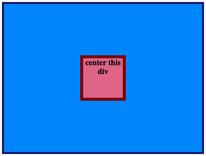
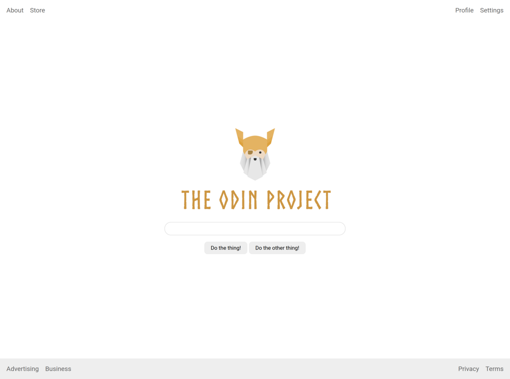

Problem #1
center this div
This one is simple, but it's something that you'll want to do ALL THE TIME. Might as well get it out of the way now.
showcase
Problem #2
a basic header
Use flexbox rules to create this very common webpage header style.
showcase
Problem #3
another common header style
Just like you did in the 02-flex-header exercise, you'll be nesting flex containers inside each other.
showcase
Problem #4
a very common website feature
The goal of this exercise is to recreate a section that is found on many informational websites.
showcase
Problem #5
a common 'modal' style
This one is another very common pattern on the web. The solution to this one is simple...
showcase

Problem #6
an entire page!
Flexbox is useful for laying out entire pages as well as the smaller components we've already been working with.
showcase
Problem #7
the holy grail layout
In this last flexbox exercise you're going to recreate an incredibly common website layout.
showcase